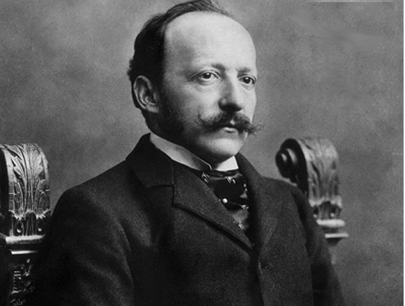

César Ritz
About the King of Hoteliers
César Ritz (1850–1918) was a Swiss hotelier and entrepreneur, known as the "King of Hoteliers and Hotelier to Kings." He transformed luxury hospitality with his emphasis on elegance, service, and innovation. Ritz’s hotels in Paris and London set new global standards for comfort and prestige.
"Where luxury became a standard" - César Ritz

César Ritz (1850–1918), pioneer of luxury hospitality
Key Milestones in Ritz’s Life
- 1850 – Born in Niederwald, Switzerland
- 1870s – Worked in Parisian restaurants and hotels
- 1898 – Opened the Hôtel Ritz in Paris
- 1906 – Opened The Ritz Hotel in London
- 1918 – Passed away, leaving a lasting legacy
Major Contributions
- Revolutionized luxury hotel standards
- Introduced modern guest service concepts
- Created the iconic Ritz hotels in Paris and London
- Inspired generations of hoteliers worldwide